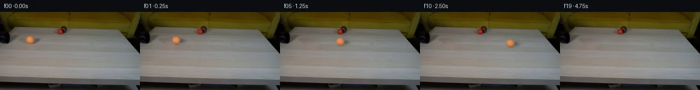
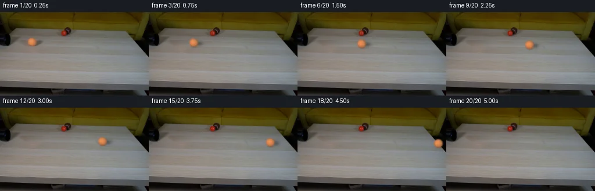
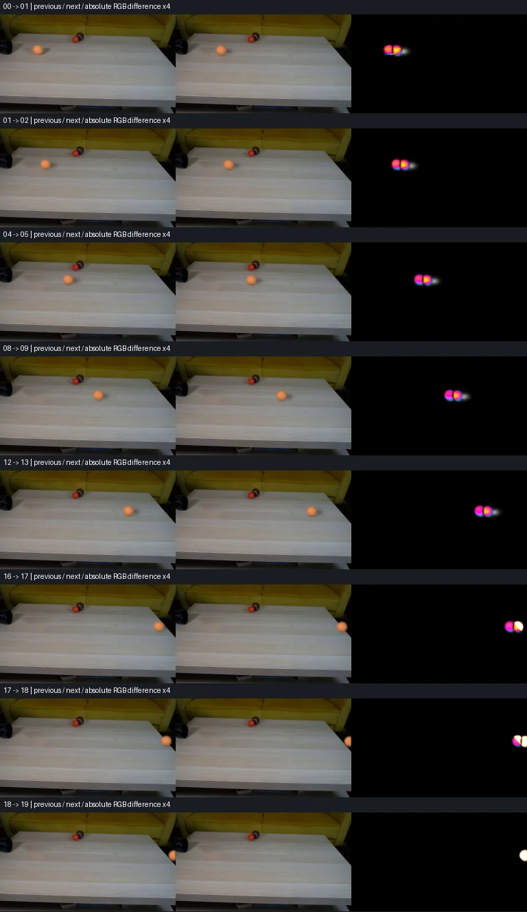

V0 · 初版 · 最终提交
![]()
Observable Generation Trace
把最终像素视频、Harness 冻结的每轮候选、真实工具事件和 Agent 自述放在同一页。可观测证据与模型自述分开标记，避免把“模型说它检查过”误当成真实工具调用。
![首帧]()
Static locked-off single-shot with fixed frame throughout filmed with constant framerate in real-time. The scene shows a realistic scientific demonstration. The scene only contains the described setup and actions. A light-colored wooden coffee table with a few small objects on it, including a brown tennis ball and a smaller red ball. The orange tennis ball rolls straight out of the black pipe over the entire table towards the right side.
首帧显示在左侧播放器初始画面。Track 权限、隔离和 tensor 一致性来自 run manifest，而不是 METHOD.md。
默认勾选初版和最终版；可选其他版本一起同步播放。仅检查图更新的连续重复快照已合并，回退旧视频仍保留为一次修订。
Observable events
来源：events.jsonl + run manifest
此 Track 禁止读取输出图片。逐轮预览由外部 Harness 自动冻结，只用于事后审计，生成 Agent 当时看不到这些页面。
Frozen candidates
每张图来自该 round 的真实 00 / 01 / 05 / 10 / 19 帧

pixels f3d96e90f86363aa · code d9fb9fff08813dde
--- previous/generate.py
+++ current/generate.py
@@ -0,0 +1,240 @@
+"""Local source-pixel reconstruction and analytic rolling-sphere rendering."""
+from pathlib import Path
+import json
+import numpy as np
+from PIL import Image, ImageDraw
+from scipy.ndimage import gaussian_filter, map_coordinates
+from scipy.optimize import least_squares
+from artifact_io import save
+
+ROOT = Path(__file__).resolve().parent
+SOURCE = np.asarray(Image.open(ROOT / 'first_frame.png').convert('RGB'))
+H, W = SOURCE.shape[:2]
+SRC = SOURCE.astype(np.float64)
+YY, XX = np.mgrid[:H, :W]
+
+
+def smoothstep(a, b, value):
+ t = np.clip((value-a)/(b-a), 0, 1)
+ return t*t*(3-2*t)
+
+
+def reconstruct_table():
+ # Horizontal wood grain is sampled from the same rows of this source only.
+ plate = SRC.copy()
+ ys = np.arange(40, 64)
+ xs = np.arange(41, 83)
+ left = SRC[40:64, 38:44].mean(axis=1)
+ right = SRC[40:64, 80:86].mean(axis=1)
+ u = (xs-41)/41
+ low = left[:, None, :]*(1-u[None, :, None]) + right[:, None, :]*u[None, :, None]
+ donor = SRC[40:64, 121:163]
+ detail = donor - gaussian_filter(donor, (0.55, 1.6, 0))
+ repair = low + detail*0.75
+ body = np.sqrt(((XX-54.6)/9.2)**2 + ((YY-50.9)/8.8)**2)
+ cast = np.sqrt(((XX-63.8)/15.5)**2 + ((YY-52.4)/7.5)**2)
+ mask = np.maximum(1-smoothstep(.90, 1.15, body), 1-smoothstep(.77, 1.13, cast))
+ local = mask[40:64, 41:83, None]
+ plate[40:64, 41:83] = SRC[40:64, 41:83]*(1-local) + repair*local
+ return plate, mask
+
+PLATE, REPAIR_MASK = reconstruct_table()
+
+# Fit a soft cast shadow against the unoccluded part of the source.
+ry, rx = np.mgrid[40:64, 42:80]
+source_roi = SRC[40:64, 42:80]
+plate_roi = PLATE[40:64, 42:80]
+shadow_fit_mask = ((rx-54.6)**2+(ry-50.9)**2 > 8.3**2)
+ratio = np.mean(source_roi / np.maximum(plate_roi, 1), axis=2)
+
+
+def cast_opacity(x, y, p):
+ sx, sy, spread_x, spread_y, strength = p
+ return strength*np.exp(-.5*((x-sx)/spread_x)**2-.5*((y-sy)/spread_y)**2)
+
+
+shadow_fit = least_squares(
+ lambda p: (1-cast_opacity(rx, ry, p)-ratio)[shadow_fit_mask],
+ [63.3, 52.6, 5.6, 3.0, .34],
+ bounds=([59, 49, 3, 1, .1], [70, 56, 12, 6, .6]),
+)
+SHADOW = shadow_fit.x
+
+# The sphere's antialiased silhouette and lighting coefficients are fitted
+# from the source ball, using no external assets or learned models.
+FIT_BOX = (42, 61, 44, 66)
+y0, y1, x0, x1 = FIT_BOX
+SS = 6
+
+
+def sphere_basis(box, cx, cy, radius, blur=.40):
+ ya, yb, xa, xb = box
+ hy = ya + (np.arange((yb-ya)*SS)+.5)/SS-.5
+ hx = xa + (np.arange((xb-xa)*SS)+.5)/SS-.5
+ y, x = np.meshgrid(hy, hx, indexing='ij')
+ nx = (x-cx)/radius
+ ny = (y-cy)/radius
+ inside = nx*nx+ny*ny < 1
+ nz = np.sqrt(np.maximum(0, 1-nx*nx-ny*ny))
+ b = np.stack([np.ones_like(nx), nx, ny, nz, nx*ny, nx*nx, ny*ny], axis=-1)
+ b *= inside[..., None]
+ b = gaussian_filter(b, (blur*SS, blur*SS, 0), mode='constant')
+ b = b.reshape(yb-ya, SS, xb-xa, SS, 7).mean(axis=(1, 3))
+ return b
+
+
+def fitted_model(params, return_coefs=False):
+ cx, cy, rad, blur = params
… diff truncated; 153 more lines …Final visual checks
Harness 保存的最终产物


Agent claims
以下文字由生成 Agent 撰写，不等同于工具证据
The supplied first frame is a 256 × 144 fixed view of a light wood coffee table in front of a yellow-green sofa. The black pipe enters from the left, with its mouth near (10, 48). The already-emerged orange tennis ball is centered approximately at (55, 51), with a radius of 7 pixels. A smaller red ball near (110, 36) and a brown object near (116, 32) stay stationary. The table back edge is near y = 30 and its front edge near y = 126; its right boundary slopes toward the lower right. Lighting is soft, with the orange ball's cast shadow extending to the right. These measurements come from the user-supplied visual frame and will be refined with numeric pixel checks.
The orange ball continues its existing roll from the pipe across the table. The camera, table, sofa, pipe and other small objects remain fixed. Motion follows a single straight projected line, with a small downward slope toward the right. Speed is approximately 44 screen pixels per second; rolling texture follows traveled distance. The ball passes below the stationary balls without touching them. It reaches the right edge near the end and continues out of view; no new objects or actions are introduced.
| Frame | Time (s) | Approx. center x | Approx. center y | Event |
|---|---|---|---|---|
| 00 | 0.00 | 55 | 51.0 | Exact supplied first frame; orange ball is already outside the pipe. |
| 01 | 0.25 | 66 | 51.6 | Continues rolling right. |
| 02 | 0.50 | 77 | 52.2 | Rolls across clear tabletop. |
| 03 | 0.75 | 88 | 52.8 | Maintains direction and speed. |
| 04 | 1.00 | 99 | 53.4 | Approaches the x-position of the other balls. |
| 05 | 1.25 | 110 | 54.0 | Passes below the smaller red ball with clearance. |
| 06 | 1.50 | 121 | 54.6 | Passes beyond the stationary objects. |
| 07 | 1.75 | 132 | 55.2 | Continues across the middle. |
| 08 | 2.00 | 143 | 55.8 | Uniform straight roll. |
| 09 | 2.25 | 154 | 56.4 | Uniform straight roll. |
| 10 | 2.50 | 165 | 57.0 | Uniform straight roll. |
| 11 | 2.75 | 176 | 57.6 | Crosses the right half. |
| 12 | 3.00 | 187 | 58.2 | Continues toward the right side. |
| 13 | 3.25 | 198 | 58.8 | Approaches the far right portion. |
| 14 | 3.50 | 209 | 59.4 | Uniform straight roll. |
| 15 | 3.75 | 220 | 60.0 | Near the right end of the table. |
| 16 | 4.00 | 231 | 60.6 | Approaches the edge. |
| 17 | 4.25 | 242 | 61.2 | Reaches the table's right side. |
| 18 | 4.50 | 253 | 61.8 | Continues off the right side; edge occlusion/clipping as appropriate. |
| 19 | 4.75 | 264 | 62.4 | Ball exits the frame to the right. |
Use only local Python image processing: reconstruct the vacated ball/shadow area from nearby table pixels; render a source-matched, softly shaded orange sphere with rotating surface detail and a soft moving contact shadow. Use numeric segmentation and color statistics to refine its size, color, shadow and path. Frame 00 is copied byte-for-byte at the pixel level. Save all 20 frames, the packed uint32 RGB tensor, inspection and transition sheets, standalone player, generator and method notes. Inspect generated outputs exclusively by local code and numeric checks; no generated image will be opened with image Read/View tools.
This sequence uses only the supplied first_frame.png, the supplied prompt, and local Python pixel operations. No network, reference images, external models, external rendering engines, or subagents were used. The attached source frame was available visually in the user message. Generated outputs were inspected only through local code and numeric checks; no generated image was opened in an image Read/View tool.
OBSERVATION.md was written before the generator, with the source measurements and a 20-frame plan. generate.py reproduces all delivery artifacts deterministically. It uses NumPy, Pillow and SciPy, and the supplied output-only artifact_io.py helper.
The camera is fixed. The orange ball, already outside the pipe in the source frame, rolls across the table toward the right at 44 projected pixels per second, with a 2.4-pixel-per-second downward component. It passes beneath the stationary red and brown objects. Contact reaches the table's right edge at approximately 4.436 seconds; a short analytic gravity continuation carries the ball out of view. The ball is absent in frame 19. Sampling is 4 fps: 20 frames, each displayed for 0.25 seconds, for a five-second sequence. Sample times run from 0.00 through 4.75 seconds.
The source reconstruction and inferred sphere/shadow are approximations. Their consistency was assessed numerically rather than by viewing generated images.
frames/00.png through frames/19.png: twenty RGB images, each 256 × 144.pixels.npz: key pixels, uint32 tensor with shape (144, 256, 20), packed as 0xRRGGBB.index.html: standalone five-second player with all twenty frames embedded, playback, seeking and looping.inspection.png: eight sampled frames in a contact sheet.transition_check.png: eight transition pairs and amplified absolute RGB differences.numeric_checks.json: the fitted parameters, planned centers and rolling angles, measured orange centroids, frame differences and serialization checks.Every PNG was decoded locally and compared to its corresponding packed tensor slice; all twenty comparisons passed. Frame 00 equals the source exactly. Local decoding of the HTML's first frame and delta packets also reproduced all twenty tensor slices exactly. Orange-color centroids advance monotonically to the right; the unoccluded orange area stays between 151 and 158 pixels through frame 16. The final reconstructed source-ball region contains no orange pixels. The sofa region, black pipe, stationary red/brown objects and table front remain pixel-identical in every frame. No camera movement is introduced.
Run python generate.py from this workspace to regenerate the images, tensor, player and numeric report. The player can be opened locally by the recipient; it was not opened for visual inspection during generation.